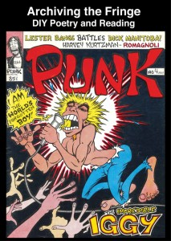
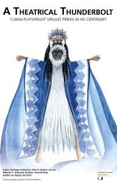

Events
Student Appreciation Sugar Rush Break
Otto G. Richter Library | Breezeway
Monday, December 3, 2012 | 2:30 p.m. to 4:30 p.m.
Join us for a student appreciation study break. In celebration of Otto G. Richter Library’s 50th anniversary, students are welcome to cake and refreshments. Students are also welcomed to re-charge with a relaxing chair massage.
Readings From the Fringe
Otto G. Richter Library | Special Collections, 8th Floor
Tuesday, November 13, 2012 at 6 p.m.
The UM Libraries continues its Year of Humanities and Arts celebrations with a unique evening of staged readings from the zine and fringe literature materials from Special Collections. Originating in the early 20th century as a mode of communication amongst science fiction fans, “zines” (fanzines) grew in popularity during the 1970s punk rock scene. Students, faculty members, and UM staff members will be reading from a variety of zine collections, including the one donated by the Firefly Collective, a Miami-based activist and education group. Come and hear readings spanning from the golden age of zines (the late 1970s and 80s) to the present.
RSVP to library.communications@miami.edu
Otto G. Richter Library’s 50th Anniversary Employee Picnic
Saturday, November 3rd, 2012
Library Green
Tricks and Treats for Richter Library’s 50th Halloween
Wednesday, October 31, 2012
Otto G. Richter Library
The Otto G. Richter Library continued its 50th Anniversary celebration with a Halloween exhibition and treats available to students and guests.
On display for Halloween is a small sampling of Special Collection’s The Jackie Gleason Collection that deal with the supernatural and ghostly. Books such as Haunted Houses by CG Harper, Ghostology by William Danmar, and Occult Digest, a Monthly for Everyone from 1925 were on display. Also on view is William Danmar’s Ghostology,where Danmar hypothesizes on the science of ghosts. This exhibition will be on display until Monday, November 5.
As a treat, cookies and candies were available to students and guests at the Library’s circulation desk.
Otto G. Richter Celebrates 50 Years
Friday, October 26, 2012 | 6:30 pm
Otto G. Richter Library
On Friday, October 26, President Donna Shalala and Dean William Walker hosted a celebration to commemorate The Otto G. Richter Library’s 50th Anniversary.
“In 50 short years we have built one of the most important information resources in the country,” said William Walker, Dean and University Librarian, to an audience of friends, trustees, and donors. Built for $3 million in 1962, it has grown into one of Florida’s largest repositories for broad and deep research collections.
Library curators mounted a Library treasures exhibition, which included materials such as a slave register from 1824, Randy Barcelo’s theater costume designs, and letters by Federico Garcia Lorca. At the beginning of the fall semester, University Archive images that demonstrate the Library’s growth over the past years were installed down the Library’s breezeway.
The event included a reception followed by a conversation between President Shalala and the Pulitzer Prize-winning SouthFlorida writer, Dave Barry. As the conversation drew to a close, Dean Walker presented Mr. Barry with a special recognition for his work capturing the spirit of South Florida for almost 30 years.
A Conversation with Ruth and Marvin Sackner
Tuesday, October 23, 2012
Reception 6:00 pm/ Lecture 6:45 pm
Otto G. Richter Library | Special Collections, 8th Floor
When Ruth and Marvin Sackner founded the Sackner Archive of Concrete and Visual Poetry in 1979, its initial mission was to establish a collection of books, critical texts, periodicals, ephemera, prints, drawings, collages, paintings, sculptures, objects, manuscripts, and correspondence dealing with precedent and contemporary, internationally produced, examples of those styles. After more than thirty years of intensive, meticulous, and discerning collecting, they have built one of the finest collections of its kind in the world. This world-class archive now contains some of the finest books and art pieces documenting such pivotal twentieth-century art movements as Italian Futurism, Russian and Eastern European Avant Garde, Dada, Surrealism, Bauhaus, De Stijl, Ultra, Tabu-Dada, Lettrisme, and Ultra-Lettrisme. Please join us in a stimulating conversation with the Sackners and find out more about their collection, the curatorial decisions inherent in building it, and their fascinating encounters with the artists behind the works.
Didier Mutel – Book Artist
Thursday, September 20, 2012 at 6pm
Otto G. Richter Library | 8th Floor Special Collections
Acclaimed French artist and author Didier Mutel combines his deep knowledge of the craft of printing and engraving and his rebellious, punk-inspired revolutionary personal style to construct and deconstruct what we think of as a book. Working in one of the last surviving 18th century printers’ studios in Paris, Mutel mixes up classical methodologies and new technologies to create works that have both visual elegance and visceral power. The University of Miami Special Collections has acquired one of the (very) limited edition copies of Mutel’s Forbes Simulacrum, which he defines as “a Danse Macabre for Billionaires,” a take-off on the traditional Medieval text in which Death visits a variety of recognizable human types. In his oversized, beautifully executed text, Death will be visiting a variety of billionaires from the Forbes list of richest people in the world. Come view the book, watch a video of Mutel creating an engraving in the time it takes to hear Sid Vicious’ version of Frank Sinatra’s “My Way,” and hear his fascinating stories about re-envisioning the art of fine printing.
Global Perspectives with Robert Tomes
Monday, September 24, 2012 at 6pm
Newman Alumni Center | 6200 San Amaro Drive | Coral Gables, FL 33146
Join the UM Libraries for the inaugural Global Perspectives Speaker Series with guest speaker Robert R. Tomes. Dr. Tomes is the Director of Tradecraft Advancement at BAE Systems Global Analysis business unit. Among his duties is preparing intelligence analysts to support full spectrum cyber security operations. He has 20 years’ experience working across the national security community in government, industry, think tanks, and nonprofits. He is currently a Director of the Council for Emerging National Security Affairs (CENSA) and the President of the MapStory Foundation. His most recent publication is Hybrid Warfare and Transnational Threats (co-editor, CENSA, 2011). RSVP to library.communications@miami.edu
Exhibitions
A Theatrical Thunderbolt: Cuban Playwright Virgilio Piñera in His Centenary Otto G. Richter Library | 2nd Floor | Roberto C. Goizueta Pavilion Fall Semester 2012 This exhibition is part of the University of Miami’s homage to the theatrical innovations of Cuban playwright Virgilio Piñera Llera (1912-1979) on the 100th anniversary of his birth. Credited with having brought modernism to Latin American theater and for writing the first theater of the absurd play, Piñera is one of Latin America’s most important playwrights. This exhibition is part Absurd Celebration: The First International Festival of Virgilio Piñera’s Theatre. For more information, click here
Do Not Go Gentle: Poetry of Protest
Otto G. Richter Library
The Lynda and Michael Gordon Exhibition Program
Fall Semester 2012
Throughout history, protests have changed the way people think and the way nations govern. This exhibition explores some important 20th- and 21st-century protest themes through musical scores, contemporary zines, artists’ books, and poems by celebrated protest writers. By touching on a range of protest from antiwar to human rights, we invite viewers to contemplate these powerful and lyrical messages of hope, peace, and change.
 Cage3: Cage Centennial Celebration
Cage3: Cage Centennial Celebration
Marta and Austin Weeks Music Library
Fall Semester 2012
One of the foremost pioneers of avant-garde music in the mid-20th century, John Cage is most well-known for his aleatory or “chance” compositions, over which he had little or no influence organization, performance, or, in some cases, even the compositional process itself. Cage’s most significant aleatory composition is his signature work 4’33”, which was composed for any instrument or combination of instruments and consists of three movements in which the performer or performers produces not a single note of music; instead, the “music” is the ambient sound of the performing space. His compositions, lectures, writings, and collaborations with choreographer Merce Cunningham and artists such as Robert Rauschenberg made him internationally famous, and led him to be one of the most influential music personalities of the last century. In celebration of the centennial of this truly remarkable icon of modern music, The Marta and Austin Weeks Music Library is pleased to present an dual physical/digital exhibit of scores, audio, video, and artwork by and about John Cage. This exhibit will be on display beginning September 2012. To view the digital Cage3 exhibit, click here.


{kind=link}
{kind=link}
{kind=link}
{kind=link}